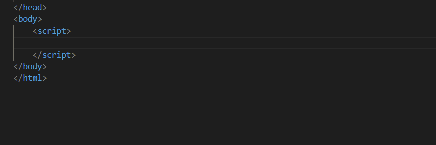
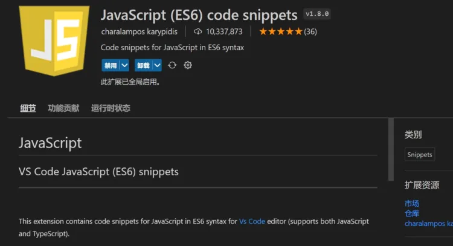
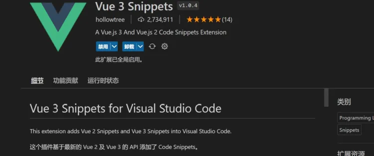
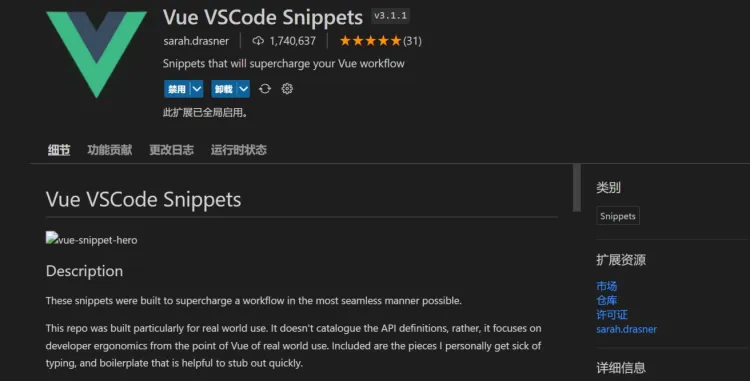
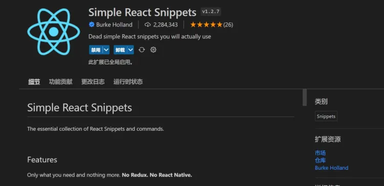
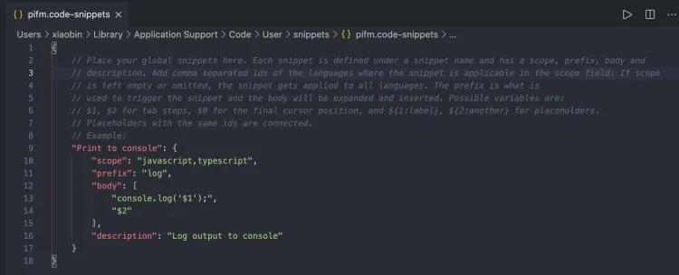

简单介绍 snippets（代码块），在我们日常工作中存在大量重复代码编写，这时可以使用snippets直接调用已经封装好的模板代码，这样做能极大提高编程效率。

另外，关于Vscode snippets的相关使用：
https://www.jianshu.com/p/a60b320fb197
https://www.php.cn/tool/vscode/489259.html
JavaScript (ES6) code snippets：ES6语法智能提示，以及快速输入，不仅仅支持.js，还支持.ts，.jsx，.tsx，.html，.vue，省去了配置其支持各种包含js代码文件的时间。

Vue 3 Snippets：包含了所有的Vue.js 2和Vue.js 3的api对应的代码片段。 
Vue Vscode Snippets：https://www.its301.com/article/qq_41107231/117195087 
Simple React Snippets：https://www.jianshu.com/p/c141b89e5808 
在 VSCode 中创建 snippets 是非常简单的事情（无需安装任何扩展），有两种方法实现：
Code -> Preferencts -> User Snippets 选项Ctrl+Shift+P ） 中输入：configure user snippets 亦可如果是创建 snippets 选择 选择 New Global Snippets file ，输入你要创面的 snippets name 即可进入配置 snippets 文件是 JSON 风格，刚创建后的默认格式内容如下： 
这里值得再提一下的就是， body 里面的 $1 正则式是模板代码替换后鼠标光标的所在位置，当出现多个 $1 ，$2 的时候，可以通过 Tab 键快速切换鼠标光标所在位置，用于提高效率。
有兴趣深入研究的伙伴可以 VSCode Snippets 官方的相关的文档，里面解释的非常详细。
官方链接：https://code.visualstudio.com/docs/editor/userdefinedsnippets
1.editorconfig作用
2.那些编辑器或IDE支持它？
原生支持：BBEdit, CodeCrusader, CodeLite, elementaryCode, Builder, Gitea, GitHub, GitLab, GitBucket, Gogs, IntlliJIDEA, jdTextEdit, KTextEditor, Komodo, Kakoune, VisualStudio, Nova,PyCharm等等
需要下载插件：AppCode, ATOM, Brackets, Code, Coda, eclipse, gedit, jEdit, Notepad++等等
（此处未容纳所有编辑器，可以自行上网查询。）
1.编辑器配置规范
（1）文件格式
EditorConfig文件是一种类似INI的文件格式。在EditorConfig文件中，每行的所有开始空格都被认为是不相关的。每一行必须是下列之一：
空白：仅包含空白字符；
注释：以;或者一个#开头，以进行注释；
键-值对 (或“对”)：包含一个键和值，用=；
节标题：以 [ 开始并以 ] 结束。
不能在括号外使用任何非空白字符。
方括号之间可以包含任何字符(例如 [ 和 ] 甚至允许空格和制表符)。
正斜杠(/)用作路径分隔符,且反斜杠(\)不允许作为路径分隔符(即使在Windows上)。
重点:第一部分之前的部分=(去掉空白)。
值:第一个之后的部分=(去掉空白)。
(2).语法
i.通配符
EditorConfig文件中的节名是文件路径全局变量，类似于所接受的格式.gitignore.它们通过Unix shell风格的通配符支持模式匹配。这些文件路径全局变量将以下字符识别为通配符匹配的特殊字符：
* 匹配除/之外的任意字符串
** 匹配任意字符串
? 匹配任意单个字符
[name] 匹配name中的任意一个单一字符
[!name] 匹配不存在name中的任意一个单一字符
{s1,s2,s3} 匹配给定的字符串中的任意一个(用逗号分隔)
{num1..num2} 匹配num1到num2之间的任意一个整数, 这里的num1和num2可以为正整数也可以为负整数
反斜杠字符(\)可用于转义字符，这样它就不会被解释为特殊字符。
核心必须接受长度不超过1024个字符的部分名称。除此之外，每个实现可以选择定义自己的上限或者根本没有明确的上限。
ii.属性
EditorConfig文件部分包含由等号(=).除了root键，所有对都必须位于节下才能生效。EditorConfig插件应忽略无法识别的键以及这些键的无效/不支持的值。
以下是此版本规范定义的所有键的列表，以及与它们相关联的支持值:
indent_style 设置缩进风格(tab是硬缩进，space为软缩进)
indent_size 用一个整数定义的列数来设置缩进的宽度，如果indent_style为tab，则此属性默认为tab_width
tab_width 用一个整数来设置tab缩进的列数。默认是indent_size
end_of_line 设置换行符，值为lf、cr和crlf
charset 设置编码，值为latin1、utf-8、utf-8-bom、utf-16be和utf-16le，不建议使用utf-8-bom
trim_trailing_whitespace 设为true表示会去除换行行首的任意空白字符。
insert_final_newline 设为true表示使文件以一个空白行结尾
root 表示是最顶层的配置文件，发现设为true时，才会停止查找.editorconfig文件
对于任何一对，值为unset移除该对的效果，即使之前已经设定过。例如，添加indent_size = unset取消定义indent_size配对(并使用编辑器默认值)。配对密钥不区分大小写。解析后所有的键都是小写的。
核心必须接受长度分别为1024和4096个字符的键和值。除此之外，每个实现可以选择定义自己的上限或者根本没有明确的上限
iii.实例
# 控制 .editorconfig 是否生效的字段
root = true
# 匹配全部文件
[*]
# 设置字符集
charset = utf-8
# 结尾换行符，可选"lf"、"cr"、"crlf"
end_of_line = crlf
# 缩进的空格数
indent_size = 4
# 缩进风格，可选"space"、"tab"
indent_style = space
# 在文件结尾插入新行
insert_final_newline = false
2. 注意事项
（1）对于Windows用户
Windows文件命名不支持特殊字符开头(如 / ? \ ^ " : | 之类的)，在Windows下创建.editorconfig时，可以输入“.editorconfig.名称”的格式，按回车后系统会自动生成.editorconfig文件。
（2）文件处理
当给EditorConfig一个文件名时，在给定文件的目录和所有父目录中搜索EditorConfig文件(名为。默认为“editorconfig”)。不存在的目录被视为存在且为空。在所有找到的EditorConfig文件中搜索节名与给定文件名匹配的节。如果发现EditorConfig文件内的"root"关键字段的值设置为true或到达根文件系统目录时停止查询。
文件从上到下读取，找到的最新规则优先。如果多个EditorConfig文件具有匹配的节，则最后读取更接近的EditorConfig文件中的规则，因此更接近的文件中的规则对优先。
3.说在最后
官网：https://link.zhihu.com/?target=https%3A//editorconfig.org/
配置规范：https://editorconfig-specification.readthedocs.io/